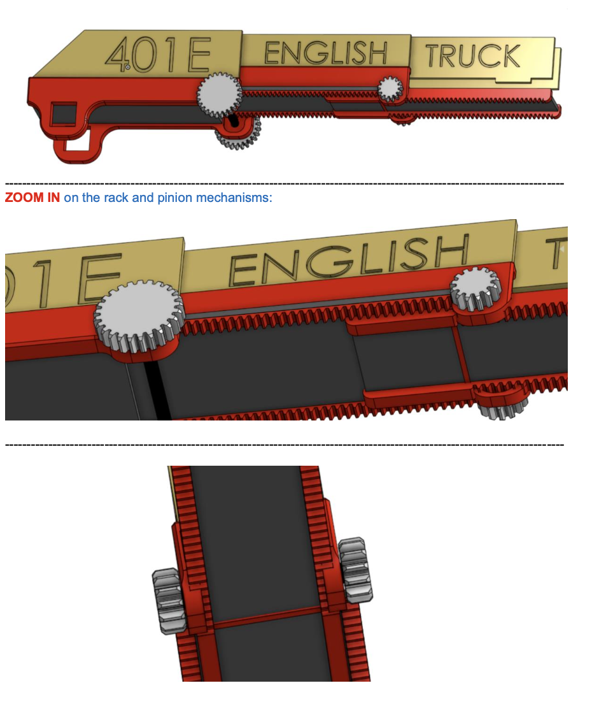
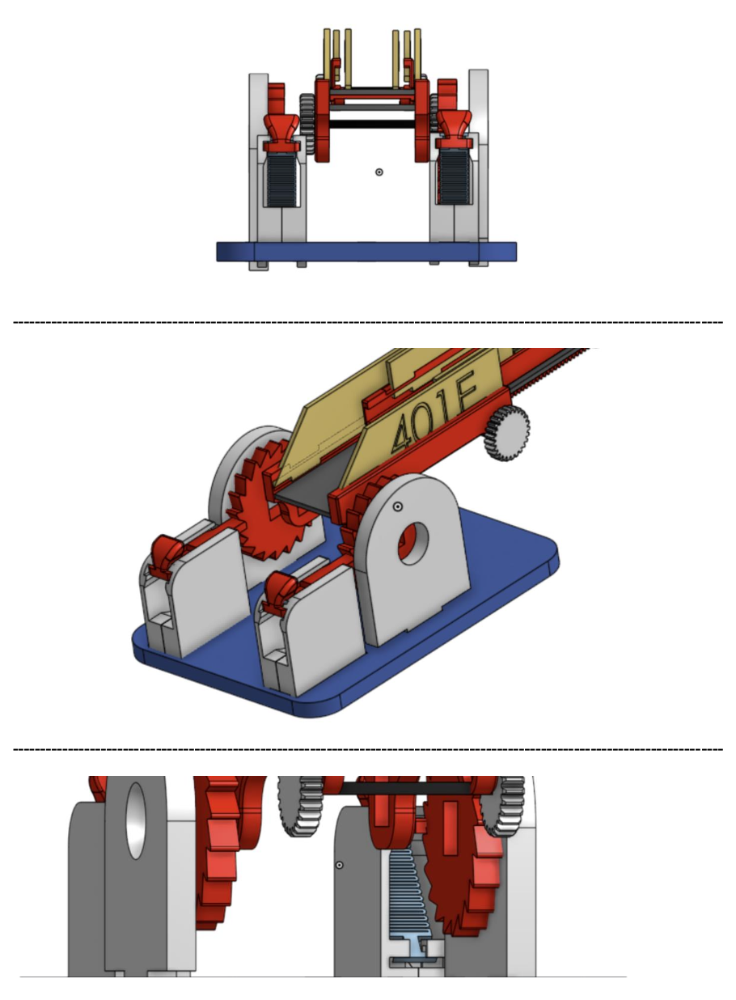
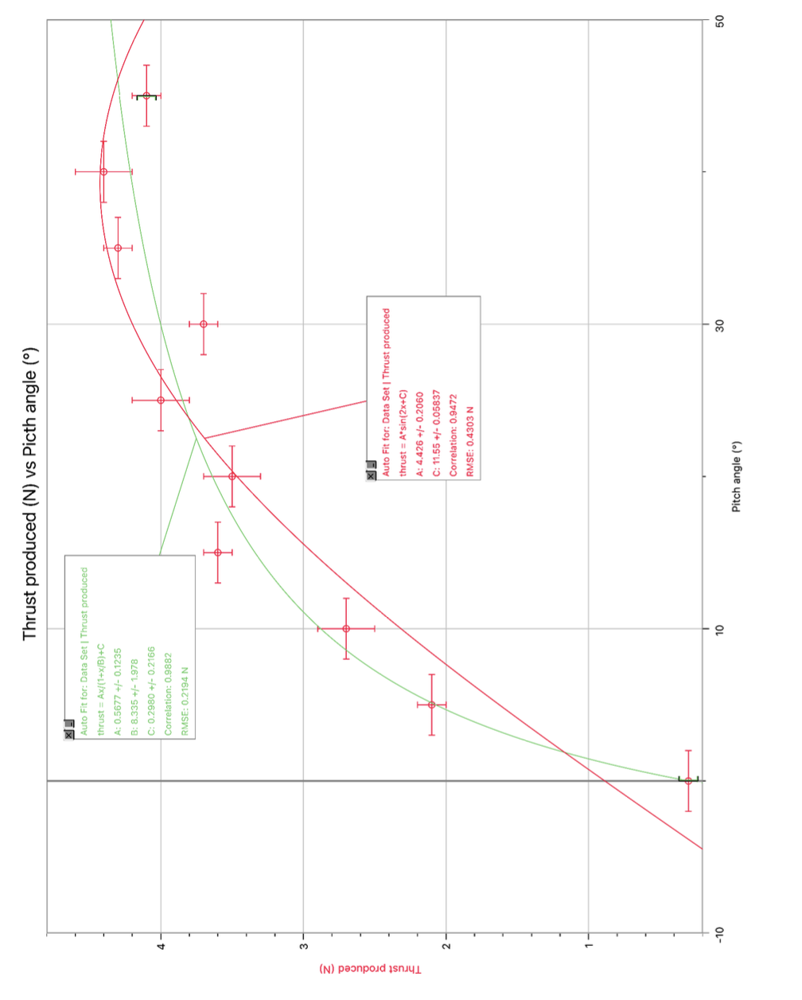
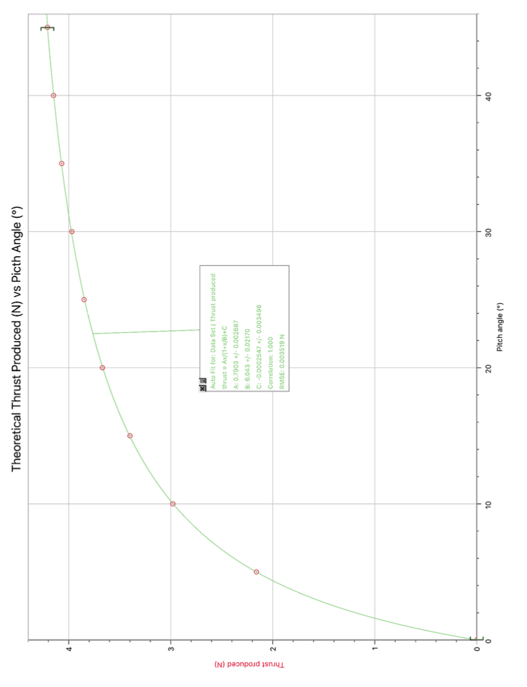

PIX1 Firefighter Ladder: CAD, 3D Printing & Laser-Cut Wood Mechanism


In a team of 6 people, we built a firefighter ladder to answer the specification of the year project PIX1 given by the school management for all students. We were able to combine 3D CAD design, 3D printing and laser cutting on wood to create a solution that exceeded the requirement. In fact, we were able to achieve an extension of the ladder by a factor of 2.13 against the required 2, to achieve the option adjustable elevation from 0 to 90° and the 360° of rotation against the required 90°, and above all support a weight of 2kg (10 times more than required). The use of multiple materials to build the ladder allowed me to gain a lot of experience in tolerances management in a multi-material project. It also allowed me to gain a lot of experience in 3D modelling as I was in charge of the extension and elevation mechanism. The commitment to perfection and perseverance along the project allowed us to receive the award for excellence project from the jury.
🏆 Campus de Paris — Prix d'Excellence Projet – Équipe 401E (English Track)
Augustin Bril, Mathys Le Blay, Guillaume Jonvel, Hugo Baran, Aude Roblet-touly et Cyprien BUQUET.
Propeller Pitch & Dynamic Thrust Analysis


Conducted an independent physics study exploring how blade pitch angles (0°–45°) impact the thrust generated by a propeller spinning at 3,000 RPM. Built a custom test setup using a 3D-printed stand, a DC motor, and a variable power supply, then measured wind speeds with an anemometer to calculate output force in Newtons. Compared experimental results against theoretical aerodynamic equations and thrust coefficient models, achieving a strong correlation (r = 0.9882) and keeping experimental error within 10%. Wrapped up the project by analyzing setup limitations and proposing practical improvements like using brushless motors and ducting to stabilize airflow.